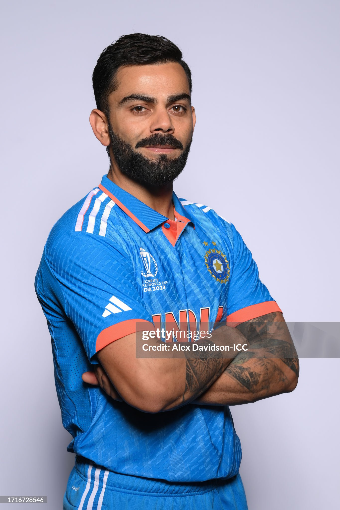

THE LAST CHAPTER
The Final ODI Chapter: India's Relentless Chaser
“Every match from here carries a little more weight.”
The arena grows quieter as the horizon narrows. What remains is his definitive India ODI journey toward the 2027 World Cup—the sacred finality of the chase in national blue. Every delivery measured, every boundary an enduring artifact.

METRICS OF THE FINAL PROSCENIUM
CHRONOLOGY OF THE FINAL ODI CHAPTER
NOW / SERIES IN PLAY
Bilateral mastery and relentless conditioning. Precision tuning for long-format tactical endurance across subcontinent grounds.
2027: HIS LAST WORLD CUP
His final World Cup campaign for India across South Africa, Namibia, and Zimbabwe. The ultimate high-altitude assault for global supremacy.
THE FINAL ODI CHAPTER
The culmination of his India ODI journey toward the 2027 World Cup, the guard of honor, and immortal entry into 50-over cricketing mythology.